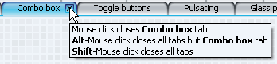
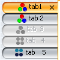
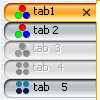
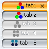

This is the third part of the series that describes the additional capabilities that you can
get on your tabbed panes once you start using the Substance
look-and-feel. The first
part described close buttons and animation on modified tabs, while the
second
part described vetoable close buttons and vertical tabs. This entry describes new features
available in the next version of Substance (code-named Firenze, currently available in development status).
The first addition is single-click close of multiple tabs. This functionality borrows from
both NetBeans (Alt+Click on close button closes all tabs but this, Shift+Click on close
button closes all tabs) and Firefox (middle click closes tab). The logic that decides what
tabs to close is written by the application and set on the corresponding tabbed pane.
Substance tracks down mouse events on the relevant tabs, calls the application callback
and closes the tabs specified by the application. Here is the example code to clarify this
capability.
Application needs to implement the TabCloseCallback interface which contains the
following four functions:
public TabCloseKind onAreaClick(JTabbedPane tabbedPane, int tabIndex,
MouseEvent mouseEvent);
public TabCloseKind onCloseButtonClick(JTabbedPane tabbedPane,
int tabIndex, MouseEvent mouseEvent);
public String getAreaTooltip(JTabbedPane tabbedPane, int tabIndex);
public String getCloseButtonTooltip(JTabbedPane tabbedPane, int tabIndex);
The first two functions are called when the user clicks on either the tab itself or on its close button (if specified). TabCloseKind is an enum with the following values:
public enum TabCloseKind {
NONE, THIS, ALL, ALL_BUT_THIS
}
The last two functions are used to provide tooltips to instruct the user about the
application-specific behaviour of single-click tab close. Sample implementation of this
interface is:
TabCloseCallback closeCallbackMain = new TabCloseCallback() {
public TabCloseKind onAreaClick(JTabbedPane tabbedPane,
int tabIndex, MouseEvent mouseEvent) {
if (mouseEvent.getButton() != MouseEvent.BUTTON2)
return TabCloseKind.NONE;
if (mouseEvent.isShiftDown()) {
return TabCloseKind.ALL;
}
return TabCloseKind.THIS;
}
public TabCloseKind onCloseButtonClick(JTabbedPane tabbedPane,
int tabIndex, MouseEvent mouseEvent) {
if (mouseEvent.isAltDown()) {
return TabCloseKind.ALL_BUT_THIS;
}
if (mouseEvent.isShiftDown()) {
return TabCloseKind.ALL;
}
return TabCloseKind.THIS;
}
public String getAreaTooltip(JTabbedPane tabbedPane, int tabIndex) {
return null;
}
public String getCloseButtonTooltip(JTabbedPane tabbedPane,
int tabIndex) {
StringBuffer result = new StringBuffer();
result.append("<html><body>");
result.append("Mouse click closes <b>"
+ tabbedPane.getTitleAt(tabIndex) + "</b> tab");
result
.append("<br><b>Alt</b>-Mouse click closes all tabs but <b>"
+ tabbedPane.getTitleAt(tabIndex) + "</b> tab");
result.append("<br><b>Shift</b>-Mouse click closes all tabs");
result.append("</body></html>");
return result.toString();
}
};
Here, simple click on close button closes the relevant tab, alt-click on close button
close all tabs but the clicked one and shift-click on close button closes all tabs. In
addition, we have the matching tooltip message when the mouse hovers over the close button:

Furthermore, middle click on the tab close that tab and shift-middle-click closes all
tabs. The last line associates our tab-close callback with one of our tabbed panes. In
order to match the multiple-tabs close, the option to veto the tab close has been
augmented with VetoableMultipleTabCloseListener interface - see the test application
for the sample usage.
The second major enhancement to the tabbed panes was requested by one of the users. This
enhancement allows to specify custom alignment of tab texts on left and right placement.
The default Swing behaviour is center-alignment, which can lead to unfriendly "fir-like"
zigzags on tabs with varying text lengths:

In order to overcome this behaviour and allow applications to show left or right
aligned texts, Substance provides the following enum:
public enum TabTextAlignmentKind {
DEFAULT, ALWAYS_LEFT, ALWAYS_RIGHT, FOLLOW_PLACEMENT, FOLLOW_ORIENTATION
}
The values are:
- DEFAULT - default alignment (centered).
- ALWAYS_LEFT - text is always aligned to left.
- ALWAYS_RIGHT - text is always aligned to right.
- FOLLOW_PLACEMENT - on LEFT
placement text is aligned to left, on RIGHT placement text is
aligned to right.
- FOLLOW_ORIENTATION - recommended alignment. For
LTR orientation text is aligned to left, for RTL orientation text is aligned to right.
In order to set the text alignment, use client property
SubstanceLookAndFeel.TABBED_PANE_TEXT_ALIGNMENT_KIND on either tabbed pane
or globally on UIManager. Value should be an element of the above enum. Screenshots
of DEFAULT,
ALWAYS_LEFT and ALWAYS_RIGHT alignment:


Screenshot of FOLLOW_ORIENTATION in RTL-oriented application with
RIGHT placement:

Stay tuned for the next part of this series - much more to come.